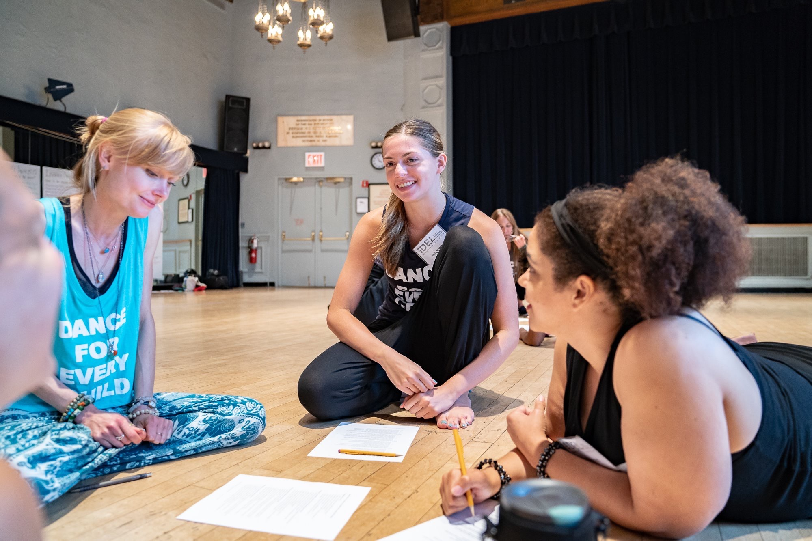

Let's get down to business
Media Experience
Marketing Intern
School of Theatre, Dance and Performance Studies
January 2020 - Present
- Create written and photo content for Instagram and Facebook that
focuses on daily happenings and event promotion for the dance department
- Lead initiative to expand online audience by engaging with content and users
from local and state high school dance programs
Staff Writer
The Diamondback - Diversions
September 2018 - Present
- Report on arts and entertainment events occurring nationwide, in the D.C. area,
and on the University of Maryland campus
- Review albums, movies, television shows, and art installations produced by students
and professional artists
- Assist with planning content for the Diversions section podcast, “The Dive”
Marketing and Events Undergraduate Assistant
University of Maryland's College of Arts and Humanities
August 2019 – December 2019
- Wrote and edited content to tell the stories of ARHU students and staff
for Facebook, Twitter, Instagram, and the website
- Maintained the editorial and events calendars
- Created analytics reports to track campaign engagement and conducted
research to effectively engage with social media trends
Staff Writer
Unwind Magazine
January 2019 – May 2019
- Covered student-held events and professional performances on campus
- Profiled active students in various campus arts groups
Dance Experience
Performance Specialist
Camp Riverbend
June 2019 – August 2019
- Designed and implemented the camp’s first performance curriculum that combined
dance, drama, and music
- Taught lessons to 500 children ranging from 4-13 years old
- Managed groups of campers with mixed levels and abilities
Performance Credits
Second Season: “Doubled Bodies” / School of Theatre, Dance, and Performance Studies
Fall 2019
Street Scene / Maryland Opera Studio
Spring 2019
Zaubernacht / Maryland Opera Studio
Spring 2019
UMOVES: Undergraduate Dance Concert / School of Theatre, Dance, and Performance Studies
Spring 2018
Education
University of Maryland, College Park
Anticipated May 2021
- Bachelor of Arts, Journalism (broadcast)
- Bachelor of Arts, Dance
- Cumulative GPA: 3.97
Dance Education Laboratory
July 2018 - August 2018
- Studied dance for early childhood and social change alongside working professionals
- Learned basics of DEL lesson plan model
- Received Level 1 Laban Movement Analyst certification

Awards/Honors
DC College Student Arts Journalism Challenge
February 2019
- One of three finalists acknowledged for excellence in arts criticis by Day Eight,
a nonprofit arts organization
Journalism President's Scholarship
August 2017 - Present
- Recipient of the Philip Merrill College of Journalism’s $20,000 per year reward
for outstanding achievement in journalism and academia
SKILLS
- Skilled in Adobe Premiere Pro, Audition & Photoshop
- Proficient in Hootsuite and TweetDeck
- Advanced skills on broadcast style and DSLR cameras
- Experience with ENPS
- Experience with WordPress and knowledge of basic HTML/CSS